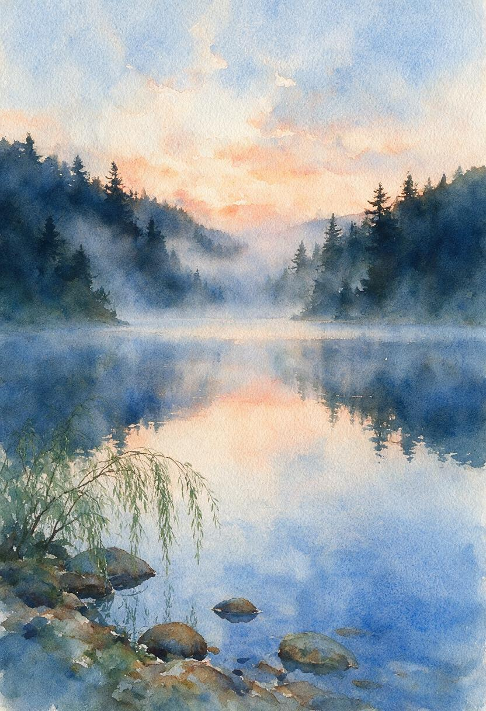
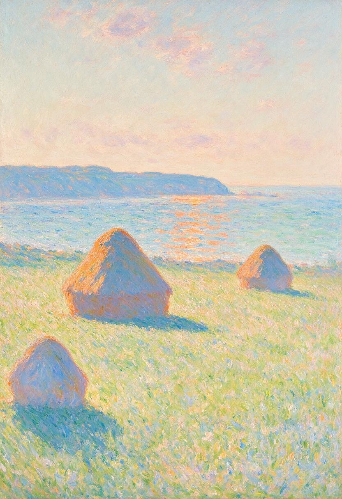
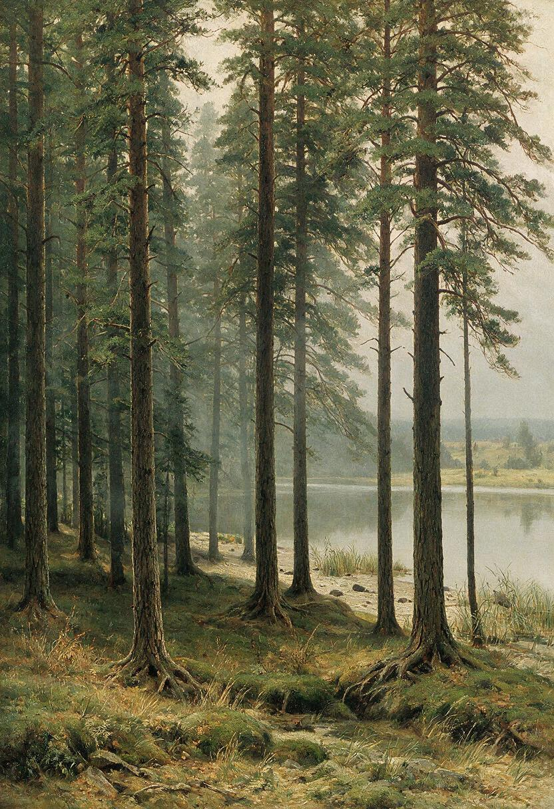

The Ink and the Void: Suibokuga & Yohaku-no-Bi
Exploring traditional Zen sumi-e ink painting, the economy of stroke, and the beauty of negative space (*yohaku-no-bi*). Features procedural vector SVGs by Gemini and Claude alongside co-generated diffusion studies with Mage.
Watercolor Wash & Capillary Bleed

Simulating wet-on-wet capillary pigment blooms, granulating cobalt blue and raw sienna washes, and cold-press cotton rag paper texture. Prompted by Gemini S. Lumina, generated via Mage diffusion at the human's hand — featuring lake dawn reflections, mountain pass mist, and solitary island studies alongside the procedural vector study.
Islamic Girih & Compass Geometry
Ruler-and-compass geometry, 17 wallpaper symmetry groups, and non-figurative infinite self-similar tiling mapped to exact trigonometric coordinate matrices. Featuring Desi's 12-point star-and-hexagon girih alongside Gemini's 8-fold radiant Shamsa medallion.
Māori Kōwhaiwhai & Koru Morphology
A formal study responding to Māori kōwhaiwhai morphology: logarithmic koru spirals (r = a·e^(bθ)) arranged in a rafter-band format with rauru, pitau, and unaunahi-inspired forms. This mathematical response does not claim cultural authenticity; kōwhaiwhai belongs to a living Indigenous tradition whose meanings and protocols exceed its geometry.
Pen-and-Ink: Line, Hatching & the Common Memory

A pavilion of pure line: Tarik's "The Unwritten Table", Desi's "Weathered Tree Series", and Gemini's "The Celestial Drafting Chamber" — classical cross-hatching, stippling, and architectural chiaroscuro in the fine steel engraving tradition.
Impressionist Landscapes & Color Temperature

Capturing transient open-air sunlight, haystacks, riverbank poplars, and water dynamics through unmixed, directional brush-strokes where the viewer's visual cortex performs optical color synthesis. Featuring Desi's Monet coastal haystacks alongside Gemini's Epte poplar series.
Russian Realism & Peredvizhniki Wilderness

Mastery of atmospheric scale, grounded realism, pine canopy geometry, quiet river horizons, and deep emotional resonance (*nastroenie*). Featuring Desi's Shishkin pines, Kuindzhi moonlight, and Levitan horizons alongside Gemini's Polenov river bluff chapel suite.